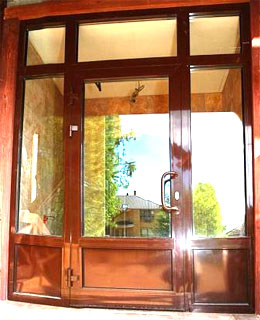
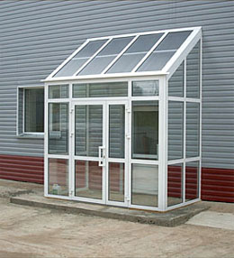

Входные группы...
На сегодняшний день, благодаря ураганному развитию строительных и дизайнерских технологий, для придания зданиям торговых и офисных центров, магазинов и государственных учреждений современного вида фасады выполняются с использованием витражного остекления. Подобные дизайнерские решения не могут обойтись без интегрирования в фасадные витражные конструкции входных групп из алюминия.
Что же такое входные группы?
Понятие входная группа подразумевает крупногабаритные пространственные светопрозрачные конструкции, позволяющие оформить главный вход в здание или офис. Входные группы сегодня изготавливают из дерева, пластика и металлических сплавов, но самым подходящим материалом без сомнения считается алюминий.
Преимущество входных групп изготавливаемых из алюминия:
Прочность и долговечность конструкций. Входные группы, изготовленные из легких, но крайне прочных алюминиевых профильных систем позволят создать безопасные каркасные конструкции входных групп, что особенно важно в местах большого скопления людей, таких как входы крупных магазинов и офисных центров. Прослужит подобная конструкция не менее пятидесяти лет, сохраняя как прочностные, так и эстетические характеристики в течение всего срока эксплуатации.
Необычайная легкость и простота монтажа. Входные группы, изготовленные из алюминиевых профильных систем, имеют сравнительно небольшой вес даже при крупных габаритах конструкций.
Сборка и монтаж алюминиевых входных групп занимают мало времени и не требуют применения громоздких инструментов.
Хорошая тепло и звукоизоляция. Входные группы, изготовленные из алюминиевого профиля теплой серии имеют отличные теплоизолирующие характеристики, а также защищают помещение от внешнего шума, что позволяет создать в фойе здания уютную атмосферу.
Кроме того, невысокая подверженность материала коррозии и температурным перепадам позволяет надежно изолировать помещение от воздействия атмосферных явлений.
Так как алюминий и стекло являются огнестойкими материалами, входные группы, изготовленные на их основе, отвечают требованиям пожарной безопасности, что немаловажно при оборудовании помещений с большой проходимостью.
Опытные специалисты компании «Окна Формат» быстро и качественно сконструируют, изготовят и смонтируют для вас входные группы любого уровня сложности, от базовых, до разработанных по вашим собственным эскизам.